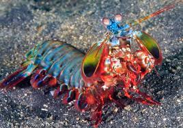

Fatos sobre o Stomatopoda.

Classificação científica
| Nome Científico | Reino | Filo | Subfilo | Classe | Subclasse | Ordem |
|---|---|---|---|---|---|---|
| Odontodactylus scyllarus | Animalia | Arthropoda | Crustacea | Malacostraca | Hoplocarida | Stomatopoda |
Fatos Interessantes

MUITA COR!!!
Nossos olhos possuem três tipos desses receptores — que respondem à luz azul, verde e vermelha —, que nos permitem perceber o espectro de cores que vemos. Os cães contam com apenas dois tipos de cones (verde e azul), e é por isso que eles vêm tons de azul, verde e um pouco de amarelo. Já as borboletas, sortudas, possuem cinco tipos de cones, o que significa que elas conseguem enxergar cores que o nosso cérebro é incapaz de processar.
Contudo, as lagostas-boxeadoras são um crustáceo tão sensacional que elas não possuem dois, três ou cinco tipos de cones apenas. Elas contam com 16! Assim, o arco-íris que elas enxergam deve ser uma verdadeira explosão termonuclear de cores, luz e beleza.

Pesadelo dos mares
As lagostas-boxeadoras costumam ser encontradas próximo à costa de mares tropicais e subtropicais e são predadoras letais que se alimentam de caranguejos, camarões, moluscos e peixes. Na verdade, apesar de não serem muito grandes — entre 15 e 30 centímetros —, as tamarutacas são um verdadeiro pesadelo dos oceanos, sendo consideradas como um dos animais mais violentos do planeta.
Elas possuem duas patas superpoderosas na parte dianteira que, quando acionadas, são capazes de proferir um golpe com a mesma aceleração de um disparo de uma arma do calibre 22 e força de impacto de 60 kg/cm3! E isso em menos de 1/3.000 de segundo, o que significa que, se um humano pudesse acelerar os braços com 1/10 desse poder, seria possível lançar uma bola de baseball em órbita ao redor da Terra.

Golpe ninja
Essas patinhas se movem tão depressa que a água próxima a elas chega a ferver — em um fenômeno chamado supercavitação —, além de provocar uma onda de choque capaz de matar a presa mesmo que a lagosta maldita erre o golpe. Assim, com esse movimento ninja, as tamarutacas assassinam outros animais, despedaçando os coitados, mesmo que contem com carapaças protetoras.
Aliás, tipicamente os aquários não mantêm espécimes de mantis entre os seus animais, já que graças aos seus hábitos violentos e sanguinários, eles não curtem dividir o espaço com outros bichinhos, massacrando seus vizinhos. Além disso, devido ao seu golpezinho ninja de nada, a lagosta-boxeadora é capaz de destruir os vidros dos tanques.
Um Pouco da Lagosta em ação:
MUITA COR!!!
Nossos olhos possuem três tipos desses receptores — que respondem à luz azul, verde e vermelha —, que nos permitem perceber o espectro de cores que vemos. Os cães contam com apenas dois tipos de cones (verde e azul), e é por isso que eles vêm tons de azul, verde e um pouco de amarelo. Já as borboletas, sortudas, possuem cinco tipos de cones, o que significa que elas conseguem enxergar cores que o nosso cérebro é incapaz de processar.
Contudo, as lagostas-boxeadoras são um crustáceo tão sensacional que elas não possuem dois, três ou cinco tipos de cones apenas. Elas contam com 16! Assim, o arco-íris que elas enxergam deve ser uma verdadeira explosão termonuclear de cores, luz e beleza.
Pesadelo dos mares
As lagostas-boxeadoras costumam ser encontradas próximo à costa de mares tropicais e subtropicais e são predadoras letais que se alimentam de caranguejos, camarões, moluscos e peixes. Na verdade, apesar de não serem muito grandes — entre 15 e 30 centímetros —, as tamarutacas são um verdadeiro pesadelo dos oceanos, sendo consideradas como um dos animais mais violentos do planeta.
Elas possuem duas patas superpoderosas na parte dianteira que, quando acionadas, são capazes de proferir um golpe com a mesma aceleração de um disparo de uma arma do calibre 22 e força de impacto de 60 kg/cm3! E isso em menos de 1/3.000 de segundo, o que significa que, se um humano pudesse acelerar os braços com 1/10 desse poder, seria possível lançar uma bola de baseball em órbita ao redor da Terra.
Golpe ninja
Essas patinhas se movem tão depressa que a água próxima a elas chega a ferver — em um fenômeno chamado supercavitação —, além de provocar uma onda de choque capaz de matar a presa mesmo que a lagosta maldita erre o golpe. Assim, com esse movimento ninja, as tamarutacas assassinam outros animais, despedaçando os coitados, mesmo que contem com carapaças protetoras.
Aliás, tipicamente os aquários não mantêm espécimes de mantis entre os seus animais, já que graças aos seus hábitos violentos e sanguinários, eles não curtem dividir o espaço com outros bichinhos, massacrando seus vizinhos. Além disso, devido ao seu golpezinho ninja de nada, a lagosta-boxeadora é capaz de destruir os vidros dos tanques.